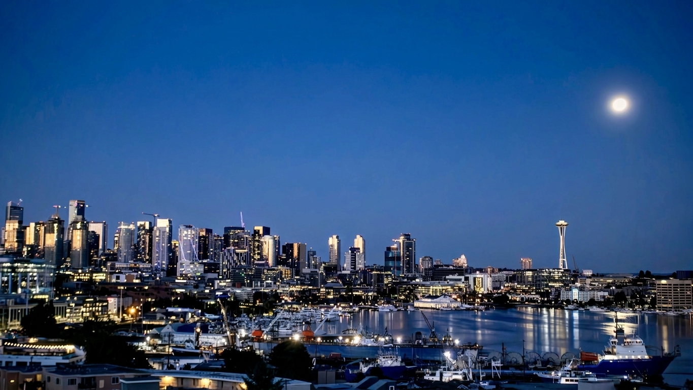

×
Photography Analysis & Enhancement

Original Score
After Editing
Analysis failed: 404 NOT_FOUND. {'error': {'code': 404, 'message': 'This model models/gemini-3-pro-preview is no longer available. Please update your code to use models/gemini-3.1-pro-preview for the latest features and improvements.', 'status': 'NOT_FOUND'}}
Analysis failed: Error code: 429 - {'error': {'message': 'You have no credits remaining. Add credits to continue using the API at https://platform.openai.com/settings/organization/billing/.', 'type': 'insufficient_quota', 'param': None, 'code': 'credit_balance_exhausted'}}
This is a well-executed cityscape with good technical fundamentals. The image captures the classic blue hour perfectly with excellent balance between ambient light and city illumination. Minor refinements to color temperature and selective tonal adjustments will enhance the drama while preserving the peaceful evening atmosphere that makes this composition successful.
Analysis failed: 404 NOT_FOUND. {'error': {'code': 404, 'message': 'This model models/gemini-3-pro-preview is no longer available. Please update your code to use models/gemini-3.1-pro-preview for the latest features and improvements.', 'status': 'NOT_FOUND'}}
This is a well-composed blue hour cityscape with good technical execution. The main opportunities lie in revealing more foreground detail and enhancing the contrast between warm city lights and cool twilight sky. The exposure is intentionally darker to preserve highlights, which is the right approach, but shadows can be lifted safely to add depth without compromising the tranquil evening atmosphere.
Analysis failed: Error code: 429 - {'error': {'message': 'You have no credits remaining. Add credits to continue using the API at https://platform.openai.com/settings/organization/billing/.', 'type': 'insufficient_quota', 'param': None, 'code': 'credit_balance_exhausted'}}